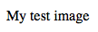

HTML (Hypertext Markup Language) is the code that is used to structure a web page and its content. For example, content could be structured within a set of paragraphs, a list of bulleted points, or using images and data tables. As the title suggests, this article will give you a basic understanding of HTML and its functions.
So what is HTML?
HTML is not a programming language; it is a markup language that defines the structure of your content. HTML consists of a series of elements, which you use to enclose, or wrap, different parts of the content to make it appear a certain way, or act a certain way. The enclosing tags can make a word or image hyperlink to somewhere else, can italicize words, can make the font bigger or smaller, and so on. For example, take the following line of content:
My cat is very grumpy
If we wanted the line to stand by itself, we could specify that it is a paragraph by enclosing it in paragraph tags:
<p>My cat is very grumpy</p>
Anatomy of an HTML element
Let's explore this paragraph element a bit further.

The main parts of our element are as follows:
- The opening tag: This consists of the name of the element (in this case, p), wrapped in opening and closing angle brackets. This states where the element begins or starts to take effect — in this case where the paragraph begins.
- The closing tag: This is the same as the opening tag, except that it includes a forward slash before the element name. This states where the element ends — in this case where the paragraph ends. Failing to add a closing tag is one of the standard beginner errors and can lead to strange results.
- The content: This is the content of the element, which in this case is just text.
- The element: The opening tag, the closing tag, and the content together comprise the element.
Elements can also have attributes that look like the following:

Attributes contain extra information about the element that you don't want to appear in the actual content. Here, class is the attribute name, and editor-note is the attribute value. The class attribute allows you to give the element an identifier that can be used later to target the element with style information and other things.
An attribute should always have the following:
- A space between it and the element name (or the previous attribute, if the element already has one or more attributes).
- The attribute name, followed by an equals sign.
- The attribute value, wrapped by opening and closing quotation marks.
Note: Simple attribute values that don't contain ASCII whitespace (or any of the characters " ' ` = < > ) can remain unquoted, but it is recommended that you quote all attribute values, as it makes the code more consistent and understandable.
Nesting elements
You can put elements inside other elements too — this is called nesting. If we wanted to state that our cat is very grumpy, we could wrap the word "very" in a <strong> element, which means that the word is to be strongly emphasized:
<p>My cat is <strong>very</strong> grumpy.</p>
You do however need to make sure that your elements are properly nested: in the example above, we opened the <p> element first, then the <strong> element; therefore, we have to close the <strong> element first, then the <p> element. The following is incorrect:
<p>My cat is <strong>very grumpy.</p></strong>
The elements have to open and close correctly so that they are clearly inside or outside one another. If they overlap as shown above, then your web browser will try to make the best guess at what you were trying to say, which can lead to unexpected results. So don't do it!
Empty elements
Some elements have no content and are called empty elements. Take the <img> element that we already have in our HTML page:
<img src="images/firefox-icon.png" alt="My test image">
This contains two attributes, but there is no closing </img> tag and no inner content. This is because an image element doesn't wrap content to affect it. Its purpose is to embed an image in the HTML page in the place it appears.
Anatomy of an HTML document
That wraps up the basics of individual HTML elements, but they aren't handy on their own. Now we'll look at how individual elements are combined to form an entire HTML page. Let's revisit the code we put into our index.html example (which we first met in the Dealing with files article):
<!DOCTYPE html>
<html>
<head>
<meta charset="utf-8">
<title>My test page</title>
</head>
<body>
<img src="images/firefox-icon.png" alt="My test image">
</body>
</html>
Here, we have the following:
<!DOCTYPE html>— The doctype. In the mists of time, when HTML was young (around 1991/92), doctypes were meant to act as links to a set of rules that the HTML page had to follow to be considered good HTML, which could mean automatic error checking and other useful things. However, these days no one cares about them, and they are just a historical artifact that needs to be included for everything to work right. For now, that's all you need to know.<html></html>— the<html>element. This element wraps all the content on the entire page and is sometimes known as the root element.<head></head>— the<head>element. This element acts as a container for all the stuff you want to include on the HTML page that isn't the content you are showing to your page's viewers. This includes things like keywords and a page description that you want to appear in search results, CSS to style our content, character set declarations, and more.<meta charset="utf-8">— This element sets the character set your document should use to UTF-8, which includes most characters from the vast majority of written languages. Essentially, it can now handle any textual content you might put on it. There is no reason not to set this, and it can help avoid some problems later on.<title></title>— the<title>element. This sets the title of your page, which is the title that appears in the browser tab the page is loaded in. It is also used to describe the page when you bookmark/favourite it.<body></body>— the<body>element. This contains all the content that you want to show to web users when they visit your page, whether that's text, images, videos, games, playable audio tracks, or whatever else.
Images
Let's turn our attention to the <img> element again:
<img src="images/firefox-icon.png" alt="My test image">
As we said before, it embeds an image into our page in the position it appears. It does this via the src (source) attribute, which contains the path to our image file.
We have also included an alt (alternative) attribute. In this attribute, you specify descriptive text for users who cannot see the image, possibly because of the following reasons:
- They are visually impaired. Users with significant visual impairments often use tools called screen readers to read out the alt text to them.
- Something has gone wrong causing the image not to display. For example, try deliberately changing the path inside your
srcattribute to make it incorrect. If you save and reload the page, you should see something like this in place of the image:

The keywords for alt text are "descriptive text". The alt text you write should provide the reader with enough information to have a good idea of what the image conveys. In this example, our current text of "My test image" is no good at all. A much better alternative for our Firefox logo would be "The Firefox logo: a flaming fox surrounding the Earth."
Try coming up with some better alt text for your image now.
Find out more about accessibility in our accessibility learning module.
Marking up text
This section will cover some of the essential HTML elements you'll use for marking up the text.
Headings
Heading elements allow you to specify that certain parts of your content are headings — or subheadings. In the same way that a book has the main title, chapter titles, and subtitles, an HTML document can too. HTML contains 6 heading levels, <h1>–<h6>, although you'll commonly only use 3 to 4 at most:
<h1>My main title</h1> <h2>My top level heading</h2> <h3>My subheading</h3> <h4>My sub-subheading</h4>
Now try adding a suitable title to your HTML page just above your <img> element.
Note: You'll see that your heading level 1 has an implicit style. Don't use heading elements to make text bigger or bold, because they are used for accessibility and other reasons such as SEO. Try to create a meaningful sequence of headings on your pages, without skipping levels.
Paragraphs
As explained above, <p> elements are for containing paragraphs of text; you'll use these frequently when marking up regular text content:
<p>This is a single paragraph</p>
Add your sample text (you should have it from What should your website look like?) into one or a few paragraphs, placed directly below your <img> element.
Lists
A lot of the web's content is lists, and HTML has special elements for these. Marking up lists always consist of at least 2 elements. The most common list types are ordered and unordered lists:
- Unordered lists are for lists where the order of the items doesn't matter, such as a shopping list. These are wrapped in a
<ul>element. - Ordered lists are for lists where the order of the items does matter, such as a recipe. These are wrapped in an
<ol>element.
Each item inside the lists is put inside an <li> (list item) element.
For example, if we wanted to turn the part of the following paragraph fragment into a list
<p>At Mozilla, we’re a global community of technologists, thinkers, and builders working together ... </p>
We could modify the markup to this
<p>At Mozilla, we’re a global community of</p>
<ul>
<li>technologists</li>
<li>thinkers</li>
<li>builders</li>
</ul>
<p>working together ... </p>
Try adding an ordered or unordered list to your example page.
Links
Links are very important — they are what makes the web a web! To add a link, we need to use a simple element — <a> — "a" being the short form for "anchor". To make text within your paragraph into a link, follow these steps:
- Choose some text. We chose the text "Mozilla Manifesto".
- Wrap the text in an
<a>element, as shown below:<a>Mozilla Manifesto</a>
- Give the
<a>element anhrefattribute, as shown below:<a href="">Mozilla Manifesto</a>
- Fill in the value of this attribute with the web address that you want the link to link to:
<a href="https://www.mozilla.org/en-US/about/manifesto/">Mozilla Manifesto</a>
You might get unexpected results if you omit the https:// or http:// part, called the protocol, at the beginning of the web address. After making a link, click it to make sure it is sending you where you wanted it to.
href might appear like a rather obscure choice for an attribute name at first. If you are having trouble remembering it, remember that it stands for hypertext reference.
Add a link to your page now, if you haven't already done so.
Conclusion
If you have followed all the instructions in this article, you should end up with a page that looks like the one below (you can also view it here):

If you get stuck, you can always compare your work with our finished example code on GitHub.
Here, we have only really scratched the surface of HTML. To find out more, go to our Learning HTML topic.